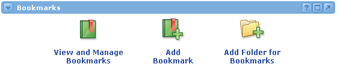
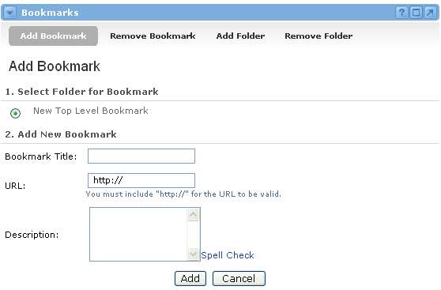
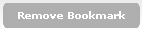
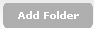
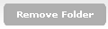

The Bookmarks channel allows individuals to maintain a personal set of folders and URL links. Similar to the "favorites" function in most browsers, the Bookmarks Channel allows you to access a personalized list of URL links at any time, from any system.
The Bookmark channel displays three icons ("View and Manage Bookmarks", "Add Bookmark", and "Add Folder for Bookmarks").

Viewing and Managing Bookmarks
To view your bookmarks, click on the View and Manage Bookmarks icon. From this view, you may link to bookmarked sites, add new bookmarks, delete bookmarks, add new folders, and delete existing folders. Click on the Folder Icon to open a folder and view the list of bookmarks contained within it.
Adding Bookmarks
|
To add a new bookmark:

 Allows you to delete existing bookmarks. When deleting you will be prompted to indicate which bookmarks you wish to remove.  Allows you to add folders, to organize bookmarks for future use. You will be prompted for a name of the folder as well as an indication of whether it will be a top-level folder or nested. If the folder will be nested, simply indicate the folder it will be nested under, using the radio buttons provided.  Allows you to delete existing folders. When deleting you will be prompted to indicate which folders you wish to delete. Any bookmarks listed under a folder will be deleted with the folder. |